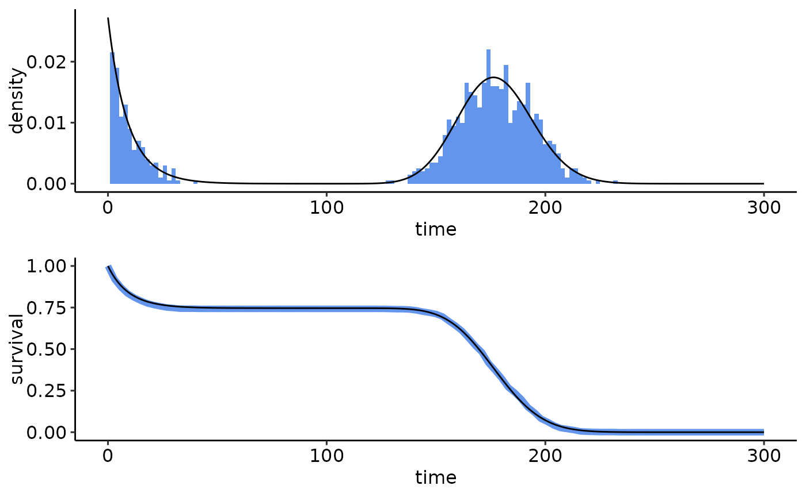
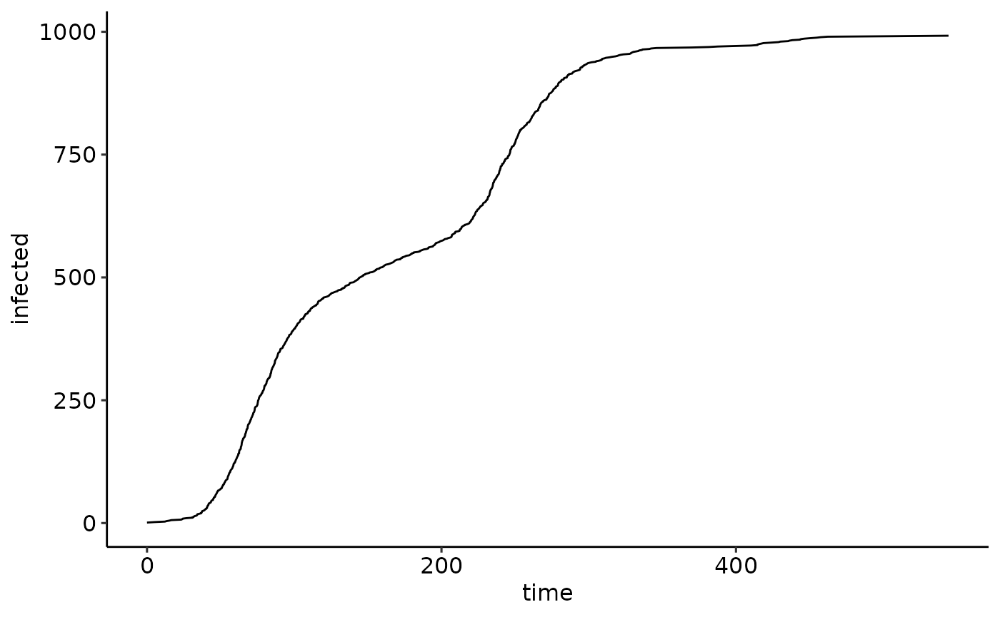

Custom time distributions (using pure R)
Source:vignettes/articles/custom_time_distributions_r.Rmd
custom_time_distributions_r.RmdIntroduction
NEXTNetR provides a set of built-in time distributions
that can be used as transmission and recovery times in simulations, see
help(time_distributions). Additional distributions can be
defined by users through either R or C++ code. Here we discuss the
simpler but much (order of magnitude!) slower R solution. See
vignette("custom_time_distributions_cpp") for the faster
but more complex C++ solution.
Loading the NEXTNetR package
We start with loading the NEXTNetR package. If the package is not already installed, see the website for installation instructions. We also load the ggplot2 and ggpubr packages for plotting and set a nice theme.
Implementing a custom time distribution in pure R
To implement a custom time distribution, we use
userdefined_time(). This function allows us to provide
arbitrary R functions that implement the functions listed in
help(time_functions) for our distribution. Each function
must take either a single argument tau or three arguments
tau, t and m. At least two
functions survival and density must be
provided. by providing single-argument functions, we signal to
NEXTNet that we only implement the base distribution and leave
it to NEXTNet to derive the conditioned and modulated version
of the distribution from that, see discussions in
help(time_functions) and
help(userdefined_time).
We use userdefined_time() to create a function
mixture_time which returns a mixture of the distributions
listed in times with weights weights.
mixture_time <- function(times, weights) {
ud_time <- NULL
ud_time <- userdefined_time(
survival=function(tau)
sum(sapply(times, time_survivalprobability, tau) * weights),
density=function(tau)
sum(sapply(times, time_density, tau) * weights),
sample=function() {
i <- sample.int(n=length(weights), prob = weights, size=1)
return(time_sample(1, times[[i]]))
},
)
}We now use the newly created mixture_time function to
create a mixture of an exponential distribution with mean 5 and a
log-normal distribution with mean 200 and variance 500, weighted so that
30% of samples come from the exponential distribution.
psi <- mixture_time(times=list(exponential_time(1/10),
lognormal_time(200, 500)), weights=c(0.3, 0.7))To test this we sample from the newly created distribution using
time_sample
samples <- time_sample(1e3, psi, t=10, m=2)and use time_density and
time_survivalprobability to compare the distribution of our
samples (in blue) to the theoretical distribution (in black) to check
that everything works correctly
samples.ecdf <- ecdf(samples)
ggarrange(
ggplot() +
lims(x=c(0, 300)) +
geom_histogram(data=data.frame(time=samples),
aes(x=time, y=after_stat(density)),
binwidth=2, fill="cornflowerblue") +
geom_function(fun=time_density, n=1000,
args=list(timedistribution=psi, t=10, m=2)),
ggplot() +
lims(x=c(0, 300), y=c(0,1)) + labs(x='time', y='survival') +
geom_function(fun=function(x) 1 - samples.ecdf(x),
color="cornflowerblue", linewidth=2) +
geom_function(fun=time_survivalprobability, n=1000,
args=list(timedistribution=psi, t=10, m=2)),
ncol=1
)
Simulations using our custom distribution
Our custom distribution in simulations in the same way as built-in
distributions, see vignette("NEXTNetR") for a step by step
explanation of this
nw <- erdos_renyi_network(1e3, 5)
sim <- simulation(nw, psi)
simulation_addinfections(sim, nodes=c(1), times=c(0.0))
events <- simulation_run(sim, stop=list(total_infected=300e3))
ggplot(events) +
geom_line(aes(x=time, y=infected))